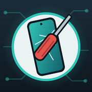
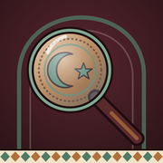
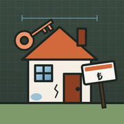
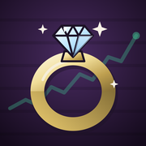
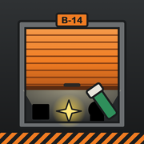
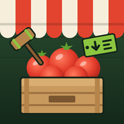

Küçük, kısa, Türk usulü oyunlar
Small, quick games with a Turkish twist.
BAL Games tek bir uygulama: 13 oyun, tek mahallede. Her oyun caddede bir dükkân.
BAL Games is one app: 13 games in one neighborhood, each one a shop on the street.
 KonşimentoShipshape
KonşimentoShipshape MakasçıSwitcheroo
MakasçıSwitcheroo SıradakiNext!
SıradakiNext! Zemin KatGoing Up!
Zemin KatGoing Up! Son FiyatLowball
Son FiyatLowball MandalHang Tight
MandalHang Tight Mahalle BekçisiOne Up
Mahalle BekçisiOne Up
TamirciQuick Fix
KapalıçarşıReal Deal
EmlakçıOpen House
KuyumcuGolden Touch
Depo AvcısıLocker Luck
HalTop Banana
Destek
Bir hata mı buldun, bir önerin mi var? Buradan yaz. Hangi oyun, hangi seviye ve telefon modelini eklersen daha hızlı bakarız.
İlerlemem kayboldu: İlerleme yalnızca telefonda saklanır. Uygulamayı silmek ya da telefonu sıfırlamak ilerlemeyi siler.
Bir oyun nasıl oynanır? Her oyunun ana menüsünde ve duraklatma ekranında “Nasıl oynanır?” var. Yeni kartlar oyunda o şey çıktıkça açılır.
Dili nasıl değiştiririm? Mahallede sağ üstteki ⚙ › Dil. Oyunların içinde de Ayarlar › Dil.
Reklam izinlerimi nasıl değiştiririm? Avrupa, Birleşik Krallık ve İsviçre'de: Ayarlar › Gizlilik seçenekleri.
Support
Found a bug or have an idea? Write to us here. Mention the game, the level and your phone model so we can look into it faster.
I lost my progress: Progress is stored only on your phone. Deleting the app or resetting the phone erases it.
How do I play a game? Every game has “How to play?” in its main menu and on its pause screen. New cards unlock as you meet each thing in the game.
How do I change the language? In the neighborhood, tap ⚙ at the top right › Language. Inside the games: Settings › Language.
How do I change my ad consent? In the EEA, UK and Switzerland: Settings › Privacy options.
© 2026 BAL Games · Gizlilik Politikası · Privacy Policy